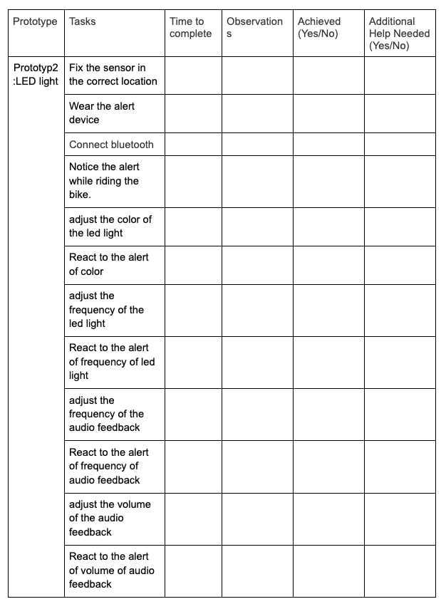

1.User manual:
Different from the user document which shows in the low-fidelity, this user manual includes clear, task-focused, presenting instructions as step-by-step procedures, and well defined images, symbols, icons, codes or relevant jargon. This user manual is for people who first interact with this type of system, and need detailed instruction instead of exploration to use this software.The high-fidelity prototype user manual can be found in here: User Manual
2.Design Evolution:
Intensity of the led light
During our usability testing, we found out the intensity of the light are the major concern that were brought by our evaluators. If the light is too bright it could potentially harm the user’s eyes and cause potential accidents. If the led light is not bright enough it would not be effective enough to alert the user that there is a car approaching him/her from behind. Thus we need to adjust the intensity of the led light to a correct degree.To achieve these tasks we need to do some more testing with different users to find out the most suitable intensity for the users.Adjust the position to place the led light.
During our usability testing, we found out the user would have to lower their head to check the alert device while the device is blinking. It is dangerous to do that since they would lose the focus of the road instead of getting distracted by the alert device. Thus, in order to prevent these situations from happening, we need to find a way to make the alert device show up in the user’s peripheral vision so they do not have to lower their head to check the device.Adjust intensity of the audio feedback.
We initially focus our major alert method on led light and use audio feedback as an assist method of alertion but after the usability testing, we notice that it would be more effective to allow the user to get alert by both the led light and audio feedback. Thus we need to adjust the intensity of the audio feedback to a right degree to allow the user to get the audio feedback but not scare them or distract other passengers.Change the way of how to restart the device
During the usability testing, users often have a hard time to figure out how to restart the alert device while turning off the alertion mode. Thus we need to change the way of how to restart the alert device may be add some text near the restart button.
3.Prototype Implementation:
Our high-fidelity prototype is made by Unity, and the demo is embedded in the webpage below. Check our updated Unity demo and give it a try!All the instructions are in the User manual, and the demo circumstance is shown in the game according to your operation.
Link to the high-fi prototype: https://simmer.io/@YujingLiu/group9
4.User population:
The user group for our Bicycle Safety Assistant is people who use bicycles, especially for people who need to share the same path with vehicles when cycling.This high-fidelity prototype tends to find participants from the intended user group who have a lot of experience in cycling in Canada, as they can give more important insight on where we have succeeded so far and what functionality we should change in the next step compared to beginner cyclists.
Our ideal participate would be people who:
- cycling at least one year
- lives in a place where cyclist have to sharing path with vehicles
- feel unsafe when cycling with vehicles
5.Usability goal:
- Easy to SET UP:
- Effectiveness:
- Easy to use:
- Safetiness:
- Confidient to use:
A new user should be able to figure out how to set up the system on their bike in under 3-4minutes.
Quantitative measurements: record the time for each devices’ set up, if the users set up all devices above 4 minutes, then the task is failed.
The method to prompt the user should be effective enough to alert the user and let them know there is a car approaching them behind.
Quantitative measurements: record the time by timer (provided by Unity) that the user notices the alert device is alerting him/her.
The system should be easy to use. When the user is using our device on the road we do not want to have some complicated functions since that could potentially cause some safety hazard.
Quantitative measurements: record the time by timer (provided by Unity) that the user uses each of the functions that are provided by the device.
The system should be safe to use. When the user sets up the device on their bike, the device should stay on the bike all the time and minimize the risk that the device will fall off the bike and cause some safety issues.
Quantitative measurements: After the testing, the user should get at least an average 4.0/5.0 rating from the safety check in the post questionnaire, otherwise it fails. And if the device falls off, the task fails.
Users should feel safe and confident when using the system.The system should successfully detect that there is an actual car behind the user and the accuracy is vital since any false alarm or miss alarm could cause an accident.
Quantitative measurements: After the testing, the user should get at least average 4.0/5.0 rating from the confident check in the post questionnaire, otherwise it fails.
6.Usability test procedure:
Numbers of examiners are required:
For each test, we need 2 examiners to go through the whole process.The responsibility for the first examiner:
- Read documentation
- Q&A for questionnaire
- Guiding and giving instruction through the test
- The responsibility for the second examiner:
- Observe the test
- Recording the test if possible
- Record the data and take notes
Equipment will the examiners need:
- A computer and internet to access the prototype: allows participates use and interact with our system in virtual reality
- A printed datasheet, a paper and a pen: the examiner can record data and notes easily during the test.
- A phone to record the test: after get permission from participants, the video will be recorded for after test reviewing.
The way our prototype is handled:
The way our prototype is handled is just as what the User Manual described.For more information about this section, please refer to our User manual and follow the step-by-step instructions of the system.
Our prototype is developed for running operations on computers.
How should the examiners treat the test subjects, what should they tell them?
During the test, the examiners need to treat the test subjects with respect, and do not ask any personal information besides the information that is related to the test from the users.Be polite with the user and give a small introduction to the user in the beginning of the test to briefly describe what test we are doing today. Kindly suggest the user to try to solve the problem if they encounter it initially and feel free to ask the examiners for help if they could not solve it eventually. Also, do not forget to ask the user permission to record the whole test session. Tell the user, the system will be tested not the users.
How will you instruct your examiners to proceed?
- 1. give the following user introduction to the users.
- 2.ask the user to read and sign the following consent form.
- 3.tell the user to do the pre-test questionnaire.
https://docs.google.com/forms/d/e/1FAIpQLSfThpErD9fcda1Zq4f8mJEHfuWh6NtnmSr7MBcNxMjQUIZH1Q/viewform?usp=sf_link - 4. give the following task to ask users to try to complete them.
- 5. Record the whole test session.
- 6. After the user finishes all the tasks, ask them to finish this Post-Task questionnaire.
https://docs.google.com/forms/d/1os-Q-FgvdrZAMIjB37forYC1BhlpdbgHSiMtMNCBDI0/edit?usp=sharing.
“Thank you for joining our usability test, our team is currently developing a new system called “Bicycle safety assistant”, which helps users to detect the vehicles from the back. And today we are inviting you to use our system, give us feedback to help us evaluate and improve our system in the future.
You will be given a paper format prototype, and you need to follow the test tasks we provided to do corresponding operations. Our observer and development team members will stay with you all the time. The whole process will take approximately 25 minutes.
If you have any questions, feel free to ask us.
There are no right or wrong questions, so please don’t be afraid to show your confusion and please give us honest feedback on the things you like or dislike.”
What should the examiners avoid doing and telling ?
When the user encounters some problem during the test, try to suggest they solve the question by themselves and avoid giving them the answer right away. Do not tell the user how to do a specific task instead of what to do. Do not be inpatient to the user when they are stuck and let them it is the system being tested not the users.What/How/When should the examiners measure?
What: Try to measure the time that they need to complete the task. Record their reaction time when the alert device is functioning. Try to record which task the user needed the examiners' help.How: Record the test session with a camera or cell phone and base on the recording try to fill up the following data collection sheet. 
When: The examiners should measure during the whole test session.
7.Reporting:
Before the testing session starts, the observer should go through the Observer briefing document.Once the testing session starts, the examiner should read the user introduction aloud to participants. After finishing the user introduction document, asking permission for the recording test session, participants first need to read and sign the consent form. Then, read the whole user manual, and fill in the pre-test questionnaire on computer.
The whole testing session was conducted via the “Bicycle safety assistant” demo game hosted on a webpage. Once the testing session starts, the examiner should read the test tasks to the users one task per time, and wait for the user to execute the corresponding request. The observer should keep silent and take notes on papers through the whole process about user actions and comments, and complete data collection sheets at the end of the test session. During the test, the examiner should take care of the whole test process: help participants with the tasks if they cannot make the operations right after 3 minutes. Participants are able to access the user manual whenever they want.
After the test session ends, participants are asked to finish the post-questionnaire on computer. The examiner should stop the video recording, get a complete data collection sheets and detailed notes about actions of participants from the observer.
The development team is expected to have a sufficient level of detail from recorded data from test session to inform us of any potential misunderstanding and problem as an users to use our system.
As for potential implications of the testing outcomes, all of the data we got from the test session is important for us to find system defects. In our high-fidelity prototype, we provide different options for users to test. We use the response of users and time performance as data to make decisions about details of the system, which means our system still has a few steps away from the final prototype.
8.Usability Evaluation
we decided to referring a certain number of the Nielsen’s list to set up the specific heuristics:Visibility of system status
definition: The system should clearly display if the system is on or off by light prompt. The system should clearly display if the alert device has connected to the microcomputer or not by light prompt. The system should clearly display if it needs to charge the battery or not. The alert device should alert the user when there is a car behind them approaching them quickly.
Match between system and the real world
definition: The system should alert the user in a straightforward and easy understanding way. Such as a series of sequences of led flash and audio feedback that normally represents a potential hazard .
User control and freedom
definition: The system should allow the user to adjust the position of the alert device to their preferred position. When a user did not connect the alert device properly to the microcomputer such as connect to another person’s iphone or connection failed the system must prompt the user and allow them to reconnect again.
Consistency and standards
definition: The frequency and intensity for led light and audio feedback should be configured in a way that matches the standard alerting prompt and keep them the same during the usage of the system.
Error prevention
definition: The system should prompt the user if the alert device has correctly connected to the microcomputer or not in order to prevent the situation that user thought they had connect the alert device properly which they were not and ride the bike and there is car behind them and the alert device do not alert them since the connection do not set up properly.
Aesthetic and minimalist design
definition: The system should be easy to use and only contain the essential component on it. The alert device should only contain the audio and led segments and the open switch and bluetooth connection component. For the microcomputer and the sensor should be integrated into a single component and able to attach it under the seat of the bike.